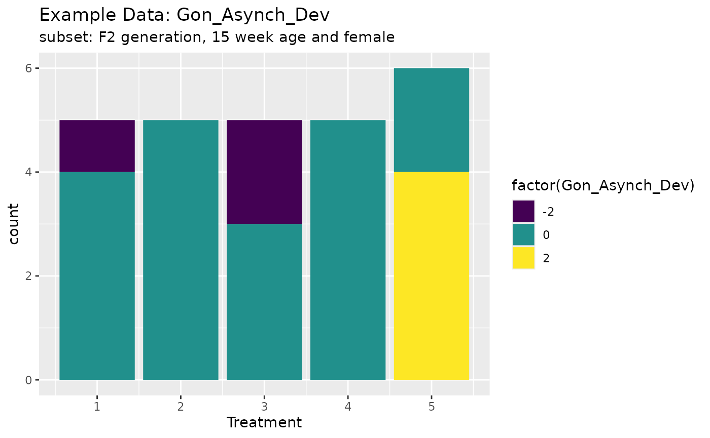
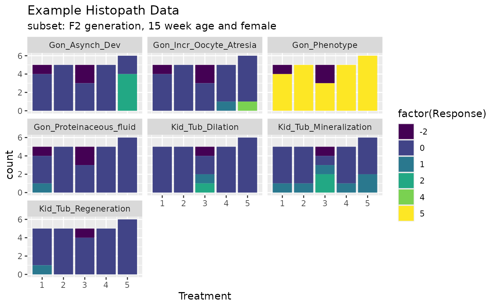
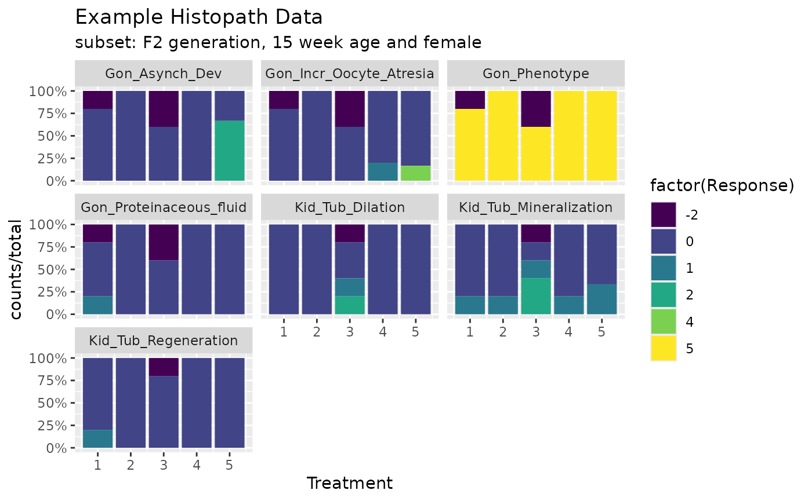

Ordinal-Data.RmdAllen Olmstead Ecotoxicologist
For the public consultation period on the EU prothioconazole endocrine assessment, one of the studies of focus in the FSTRA (fish short term reproduction assay). In particular there was a question concerning the histopathology results (female oocyte atresia, specifically) and whether they were statistically significant. In our report, there is no formal statistical analysis of the data. I was asked about the availability of approaches for this based on my past postdoctoral experience at the EPA lab that developed many of the endocrine assays. For histopath endpoints, the EPA used a Rao-Scott Cochran-Armitage Trend Test By Slices (RSCABS, described in attached paper).
Using this RSCABS procedure, I looked at the female oocyte atresia data in R. The attached Excel file has the data and the other attached pdf has my notes on this analysis. However, validation is needed if we are to proceed with this approach in any external purpose.
RSCABS: designed to analyze histopathological results from standard toxicology experiments, for example the MEOGRT.
Steps in the testing procedure:
1.The Cochran-Armitage (CA) trend test was used to test a set of organisms for an increase in the presences (score > 0) or absence (score = 0) of an effect with an increase in the dose concentration of the treatments. 2. The Rao-Scott (RS) adjustment controls for the similarity in each experiment unit / apparatus (e.g., fish tank) by calculating an adjustment to the CA test statistic from correlation of organisms within each apparatuses. 3. The by slices (BS) part allows for testing at each severity score (e.g., from 1 to 5) instead of just presences or absence. By slices works by splitting the severity scores associated with an endpoint into two groups based on the severity score being tested. The RSCA test statistic is calculated based on these two groups. 4. Carry out a step-down procedure by excluding the highest treatment level in the analysis and recalculate the RSCA test statistic until the test stats is not significant or there is only control group left.
$Gon_Asynch_Dev
Effect Treatment R.Score Statistic P.Value Signif
1 Gon_Asynch_Dev1 5 1 2.622022 0.004370488 **
2 Gon_Asynch_Dev1 4 1 NaN 1.000000000 .
3 Gon_Asynch_Dev1 4 1 NaN 1.000000000 .
4 Gon_Asynch_Dev2 5 2 2.622022 0.004370488 **
5 Gon_Asynch_Dev2 4 2 NaN 1.000000000 .
6 Gon_Asynch_Dev2 4 2 NaN 1.000000000 .
library(drcHelper)## Loading required package: drc## Loading required package: MASS## Loading required package: drcData##
## 'drc' has been loaded.## Please cite R and 'drc' if used for a publication,## for references type 'citation()' and 'citation('drc')'.##
## Attaching package: 'drc'## The following objects are masked from 'package:stats':
##
## gaussian, getInitial## Warning in system("timedatectl", intern = TRUE): running command 'timedatectl'
## had status 1## ── Attaching core tidyverse packages ──────────────────────── tidyverse 2.0.0 ──
## ✔ dplyr 1.1.4 ✔ readr 2.1.5
## ✔ forcats 1.0.0 ✔ stringr 1.5.1
## ✔ ggplot2 3.5.1 ✔ tibble 3.2.1
## ✔ lubridate 1.9.3 ✔ tidyr 1.3.1
## ✔ purrr 1.0.2## ── Conflicts ────────────────────────────────────────── tidyverse_conflicts() ──
## ✖ dplyr::filter() masks stats::filter()
## ✖ dplyr::lag() masks stats::lag()
## ✖ dplyr::select() masks MASS::select()
## ℹ Use the conflicted package (<http://conflicted.r-lib.org/>) to force all conflicts to become errors
data("exampleHistData")
exampleHistData <- exampleHistData %>% as_tibble %>% mutate(across(where(is.integer),as.numeric)) %>% as.data.frame(.)
#Take the subset corresponding to F0-females of 16 weeks of age
subIndex<-which(exampleHistData$Generation=='F2' &
exampleHistData$Genotypic_Sex=='Female' &
exampleHistData$Age=='16_wk' )
exampleHistData.Sub<-exampleHistData[subIndex, ]
#Run RSCABS
exampleResults<-runRSCABS(exampleHistData.Sub,'Treatment',
'Replicate',test.type='RS')| Effect | Treatment | R.Score | Statistic | P.Value | Signif |
|---|---|---|---|---|---|
| Gon_Incr_Oocyte_Atresia1 | 5 | 1 | 1.330 | 0.092 | . |
| Gon_Incr_Oocyte_Atresia1 | 5 | 1 | 1.330 | 0.092 | . |
| Gon_Incr_Oocyte_Atresia2 | 5 | 2 | 1.231 | 0.109 | . |
| Gon_Incr_Oocyte_Atresia2 | 5 | 2 | 1.231 | 0.109 | . |
| Gon_Incr_Oocyte_Atresia3 | 5 | 3 | 1.231 | 0.109 | . |
| Gon_Incr_Oocyte_Atresia3 | 5 | 3 | 1.231 | 0.109 | . |
| Gon_Incr_Oocyte_Atresia4 | 5 | 4 | 1.231 | 0.109 | . |
| Gon_Incr_Oocyte_Atresia4 | 5 | 4 | 1.231 | 0.109 | . |
| Gon_Proteinaceous_fluid1 | 5 | 1 | -1.410 | 0.079 | . |
| Gon_Proteinaceous_fluid1 | 5 | 1 | -1.410 | 0.079 | . |
| Gon_Asynch_Dev1 | 5 | 1 | 2.622 | 0.004 | ** |
| Gon_Asynch_Dev2 | 5 | 2 | 2.622 | 0.004 | ** |
| Kid_Tub_Mineralization1 | 5 | 1 | 0.358 | 0.360 | . |
| Kid_Tub_Mineralization1 | 5 | 1 | 0.358 | 0.360 | . |
| Kid_Tub_Mineralization2 | 5 | 2 | -0.070 | 0.472 | . |
| Kid_Tub_Mineralization2 | 5 | 2 | -0.070 | 0.472 | . |
| Kid_Tub_Dilation1 | 5 | 1 | -0.070 | 0.472 | . |
| Kid_Tub_Dilation1 | 5 | 1 | -0.070 | 0.472 | . |
| Kid_Tub_Dilation2 | 5 | 2 | -0.049 | 0.480 | . |
| Kid_Tub_Dilation2 | 5 | 2 | -0.049 | 0.480 | . |
| Kid_Tub_Regeneration1 | 5 | 1 | -1.375 | 0.085 | . |
| Kid_Tub_Regeneration1 | 5 | 1 | -1.375 | 0.085 | . |
ggplot(exampleHistData.Sub,aes(x=Treatment,fill=factor(Gon_Asynch_Dev)))+geom_bar()+scale_fill_viridis_d()+labs(title="Example Data: Gon_Asynch_Dev",subtitle = "subset: F2 generation, 15 week age and female")
# xlab<-'Group'
# ylab<-'Total Fish'
# main<-'Example Graph for \n Example Data and Gon_Asynch_Dev'
# col<-c('purple1','red3')
# Metric="Total"
# Lowest ="Include"
# # PlotParms<-list()
# # PlotParms$xlab<-'Group'
# # PlotParms$ylab<-'Total Fish'
# # PlotParms$main<-'Example Graph for \n Example Data and Gon_Asynch_Dev'
# # PlotParms$Colors<-c('purple1','red3')
# plotRSCABS(Data=exampleHistData.Sub, Effect="Gon_Asynch_Dev",
# Treatment="Treatment", Metric="Total", Lowest = "Include",
# #PlotParms =PlotParms,
# Format = NULL, File = NULL,
# xlab=xlab,main=main,ylab=ylab,col=col)
# ####################
# col <- c("purple","green","black")
# plotRSCABS(Data=exampleHistData.Sub, Effect="Gon_Incr_Oocyte_Atresia",
# Treatment="Treatment", Metric="Total", Lowest = "Include",
# #PlotParms =PlotParms,
# Format = NULL, File = NULL,
# xlab=xlab,main=main,ylab=ylab,col=col)
cids <-which(apply(exampleHistData.Sub[,-(1:5)],2,max)>0)
responses <- names(cids)
ggplot(exampleHistData.Sub[,c(1:5,5+cids)]%>%tidyr::pivot_longer(-(1:5),values_to = "Response",names_to = "Endpoint"),aes(x=Treatment,fill=factor(Response)))+geom_bar()+scale_fill_viridis_d()+labs(title="Example Histopath Data",subtitle = "subset: F2 generation, 15 week age and female")+facet_wrap(~Endpoint)
library(scales)
#>
#> Attaching package: 'scales'
#> The following object is masked from 'package:purrr':
#>
#> discard
#> The following object is masked from 'package:readr':
#>
#> col_factor
dat1 <- exampleHistData.Sub[,c(1:5,5+cids)]%>%tidyr::pivot_longer(-(1:5),values_to = "Response",names_to = "Endpoint") %>% group_by(Endpoint,Treatment,Response) %>% summarise(counts=n())%>% group_by(Endpoint,Treatment) %>% mutate(total=sum(counts))
#> `summarise()` has grouped output by 'Endpoint', 'Treatment'. You can override
#> using the `.groups` argument.
ggplot(dat1,aes(x=Treatment,fill=factor(Response)))+geom_bar(aes(y=counts/total),stat = "identity")+scale_fill_viridis_d()+labs(title="Example Histopath Data",subtitle = "subset: F2 generation, 15 week age and female")+facet_wrap(~Endpoint,drop = T)+ scale_y_continuous(labels = percent)
library(DependenciesGraphs)
#> Loading required package: visNetwork
#> Loading required package: shinydashboard
#>
#> Attaching package: 'shinydashboard'
#> The following object is masked from 'package:graphics':
#>
#> box
#> Loading required package: XML
dep <- funDependencies("package:drcHelper","runRSCABS")
# visualization
plot(dep)